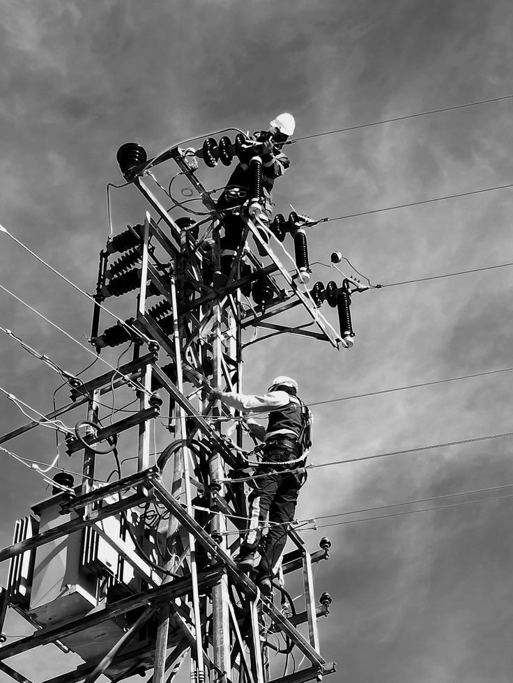

Dingusi elektra
butuose, namuose ir smulkiose verslo patalpose
Šis puslapis skirtas situacijoms, kai nebeužtenka tiesiog „pasikonsultuoti“. Jei jaučiate svilėsių kvapą, skydelis kaista, dingsta elektra, kibirkščiuoja rozetės ar nuolat išmušinėja automatus, svarbiausia yra saugumas ir greita reakcija.

Dingusi elektra
butuose, namuose ir smulkiose verslo patalpose
Kibirkščiavimas
rozetėse, jungikliuose ir skydeliuose
Automatai
nuolat išmušinėjantys ar kaistantys
Sauga
pirmiausia izoliuojama rizika, tik tada planuojamas remontas
Šis blokas padeda lankytojui greitai atpažinti situaciją, o tuo pačiu išplečia puslapio semantiką pagal dažniausias skubias paieškas.
Jei elektros tiekimas nutrūko ne dėl bendro tinklo sutrikimo, o problema yra objekte, reikalinga skubi diagnostika ir saugus atstatymas.
Tai vienas aiškiausių signalų, kad kontaktai gali kaisti arba lydytis. Tokiu atveju delsti nereikia ir verta iš karto kviesti elektriką.
Kibirkščiavimas rodo blogą kontaktą, perkrovą arba nusidėvėjusią įrangą. Pirmas tikslas yra pašalinti riziką, kad nekiltų gaisro pavojus.
Jei automatai krenta nuolat, problema dažniausiai glūdi ne pačiame automate, o grandinėje, jungtyse ar prijungtoje įrangoje.
Kai žmogus ieško užklausos „avarinis elektrikas Kaune“, dažniausiai jam reikia ne ilgo techninio paaiškinimo, o greito sprendimo. Todėl šiame puslapyje informacija sudėliota labai praktiškai: kada reikia skambinti nedelsiant, kokie simptomai pavojingi, kaip greitai galima tikėtis reakcijos ir kiek maždaug kainuoja pirmasis iškvietimas.
Pirmas veiksmas skubioje situacijoje yra rizikos suvaldymas. Jei galima, rekomenduojama atjungti probleminę grandinę, neliesti kibirkščiuojančių mazgų ir nenaudoti įrangos, kuri kaista ar skleidžia svilėsių kvapą. Toliau jau svarbus operatyvus elektriko atvykimas ir tiksli priežasties diagnostika.
Senesniuose daugiabučiuose dažnai pasitaiko problemų dėl susidėvėjusių jungčių, netvarkingai pridėtų papildomų rozečių, apkrautų virtuvės linijų ar senų skydelių. Individualiuose namuose dažniau pasitaiko problemos lauko linijose, garažuose, ūkinėse patalpose ar po remonto ne iki galo sutvarkytose jungtyse. Abiem atvejais svarbiausia ne tik atkurti elektros tiekimą, bet ir suprasti, kodėl gedimas įvyko.
Jei gedimas lokalus, dažnai jis pašalinamas to paties vizito metu. Jei paaiškėja, kad sistema susidėvėjusi plačiau, pateikiame aiškų tolimesnių darbų planą. Tokiu atveju klientus dažnai nukreipiame ir į platesnių darbų puslapį Elektros darbai Kaune, kuriame aprašytas visos sistemos atnaujinimas.
Reakcijos laikas priklauso nuo paros laiko, vietos ir tuo metu turimų iškvietimų, tačiau prioritetas visada skiriamas situacijoms, kuriose yra reali saugumo rizika. Jei gedimas susijęs su dūmais, stipriu kvapu, įkaitusiu skydeliu ar dingusia elektra visame objekte, informuokite apie tai iškart skambučio pradžioje. Tai padeda tiksliau įvertinti, ar reikalingas neatidėliotinas atvykimas, ar galima trumpam stabilizuoti situaciją nuotoliniu patarimu iki vizito.
Dažnas klaidingas sprendimas yra kelis kartus bandyti vėl ir vėl įjungti išmušantį automatą. Jei priežastis yra trumpas jungimas, perkrauta linija ar kaistantis kontaktas, toks veiksmas gali situaciją pabloginti. Todėl avarinis elektrikas Kaune pirmiausia ieško priežasties, o ne tik laikinai atkuria maitinimą. Toks požiūris mažina pasikartojančio gedimo ir didesnės žalos tikimybę.
Dalis pavojingų gedimų įvyksta būtent tada, kai žmonės būna namuose ir aktyviai naudoja daugiau įrangos: vakarais, savaitgaliais ar švenčių metu. Todėl puslapis akcentuoja ne tik gedimų šalinimą, bet ir pasiekiamumą tais momentais, kai klientui labiausiai reikia pagalbos. Jei situacija stabilizuojama per pirmą vizitą, vėliau galima ramiai susiplanuoti platesnius remonto ar sistemos atnaujinimo darbus be papildomo streso.
Skubūs iškvietimai aktualūs skirtingose Kauno vietose: nuo Centro ir Senamiesčio iki Šilainių, Dainavos, Aleksoto ar Romainių. Vietinis pasiekiamumas svarbus todėl, kad avarinio gedimo metu kiekviena papildoma laukimo valanda reiškia daugiau nepatogumo ir didesnę riziką namams ar veiklai.
Skubus elektrikas yra ypač svarbus tais atvejais, kai problema pasireiškia vakare ar savaitgalį. Būtent dėl to šiame puslapyje akcentuojamas greitas kontaktas telefonu, aiškūs CTA mygtukai ir dažniausiai užduodami klausimai apie atvykimo laiką bei savaitgalio darbus.
Avariniuose iškvietimuose svarbu pateikti bent orientacinį rėžį. Tai mažina neapibrėžtumą ir skatina klientą greičiau susisiekti.
nuo 60 €
Kaina priklauso nuo paros laiko, objekto vietos ir situacijos skubumo.
nuo 30 €
Priežasties paieška, grandinės ir skydelio patikra, problemos identifikavimas.
pagal situaciją
Galutinė kaina priklauso nuo reikalingų dalių, darbų trukmės ir problemos masto.
Jei situacija skubi ir esate Kaune, dažniausiai siekiama atvykti tą pačią dieną arba kuo greičiau pagal užimtumą ir vietą. Pirmo skambučio metu iš karto įvertinama, ar tai tikrai avarinė situacija.
Taip, avarinis elektrikas Kaune gali atvykti ir savaitgaliais, kai problema nebegali laukti darbo dienos. Tai ypač aktualu kibirkščiavimo, kvapo ar visiško elektros dingimo atvejais.
Skubaus iškvietimo kaina dažniausiai prasideda nuo 60 eurų, tačiau tikslų įvertinimą lemia atvykimo laikas, gedimo sudėtingumas ir tai, ar remontas atliekamas iš karto vietoje.
Taip. Jei paaiškėja, kad problema susijusi su visa instaliacija ar skydeliu, galime suplanuoti platesnius darbus. Tokiais atvejais tęsiame projektą kaip pilnus elektros darbus Kaune.
Kibirkščiavimas, svilėsių kvapas ar įkaitęs skydelis nėra tas gedimas, kurį verta atidėti rytojui. Pirmas tikslas yra saugumas.